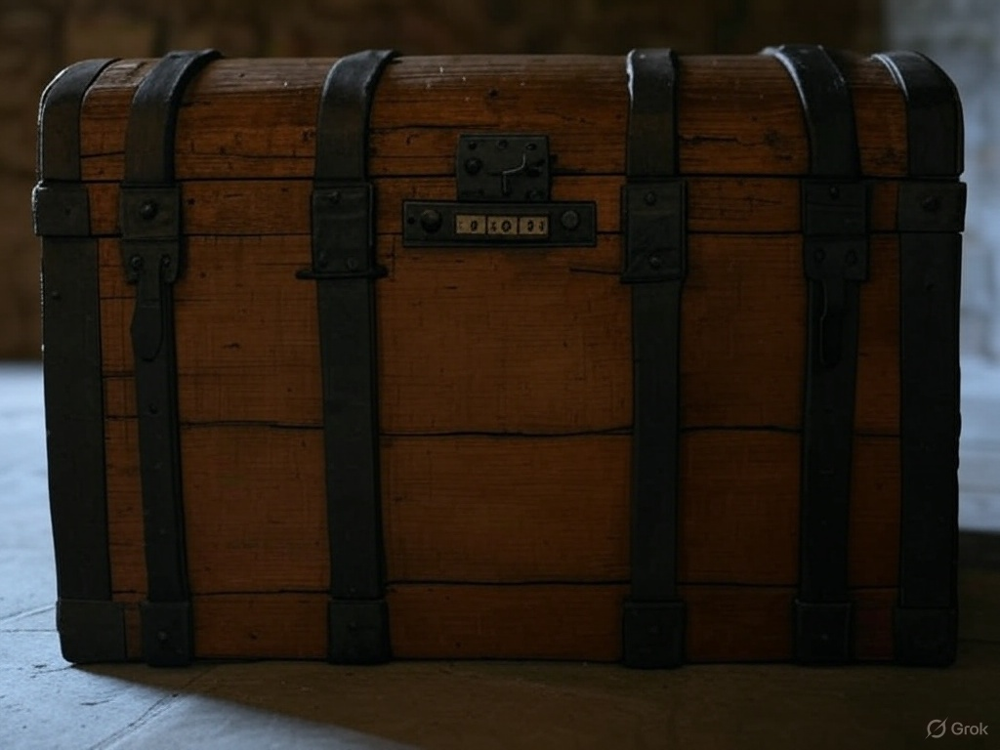

Verifica tu ubicación
Acércate a la puerta principal del Castillo de San Martín para iniciar la búsqueda del mensaje.
O ingresa el nombre:
Retos Visuales: Afina tus sentidos
1. ¿Qué destaca en la fachada principal del castillo?
2. ¿Cuántas torres tenía originalmente el castillo?
Quiz: Descubre el mensaje
1. ¿En qué siglo se funda esta fortificación?
2. ¿Qué alberga el castillo desde el siglo XIX?
3. ¿Qué función tiene actualmente el castillo?
Candado del Cofre

0
0
0
0
Fragmento del Mensaje: Oculto
QR en el pueblo: CASTILLO (busca en la entrada principal).
Dato Curioso: Cerámicas y monedas del siglo XIII halladas aquí inspiraron a Gonzalo.